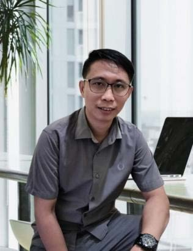

Sistem & Infrastruktur
Menjaga server, container, dan log tetap terbaca dan sehat.
Technical Operations
Technical Operations yang juga berpengalaman sebagai Project Manager dan Scrum Master. Lebih dari 16 tahun menjaga sistem tetap berjalan dan produk tetap terkirim.

Saya bekerja di persimpangan antara operasional dan produk. Selama lebih dari 16 tahun, saya menangani application support, operasional teknis, hingga memimpin tim pengembangan sebagai Project Manager dan Scrum Master.
Keseharian saya adalah memastikan sistem POS, aplikasi mobile, e-commerce, dan CMS portal tetap berjalan — dari membaca log di Kibana dan menjaga container di Kubernetes, sampai memastikan sprint selesai tepat waktu. Saya cepat mempelajari hal baru dan percaya bahwa komunikasi tim yang jelas adalah kunci pengiriman yang rapi.
Dari baris perintah di server hingga backlog sprint — inilah area yang paling sering saya sentuh.
Menjaga server, container, dan log tetap terbaca dan sehat.
Membangun dan merawat antarmuka serta layanan backend.
Query, migrasi, dan troubleshooting data operasional.
Alat bantu harian dan domain produk yang saya kuasai.
Enam belas tahun belajar dari lapangan: menangani insiden, menjaga layanan, lalu mengatur ritme tim.
Technical Operation
Project Manager / Scrum Master
Technical Operation
Application Support
Game Master
Sebagian besar pekerjaan saya berlangsung di balik layar — memastikan platform retail dan operasional tetap hidup.
Platform retail dan e-commerce: operasional teknis, monitoring rilis, serta koordinasi lintas tim selama transisi V3 ke V4.
Proyek profesionalSistem POS dan operasional gerai: dukungan harian, troubleshooting, eskalasi insiden, dan analisis log.
Proyek profesionalKumpulan eksperimen kode, utilitas kecil, dan proyek sampingan yang saya kerjakan di luar jam kerja.
Lihat GitHubSekolah menengah atas.
Tidak diselesaikan — ilmu tetap berjalan lewat praktik dan proyek nyata.
Terbuka untuk diskusi seputar Technical Operations, Project Management, maupun Scrum Mastery. Balasan biasanya dalam 1×24 jam.
$ whoami
Technical Operations / Project Manager / Scrum Master
$ mail --to